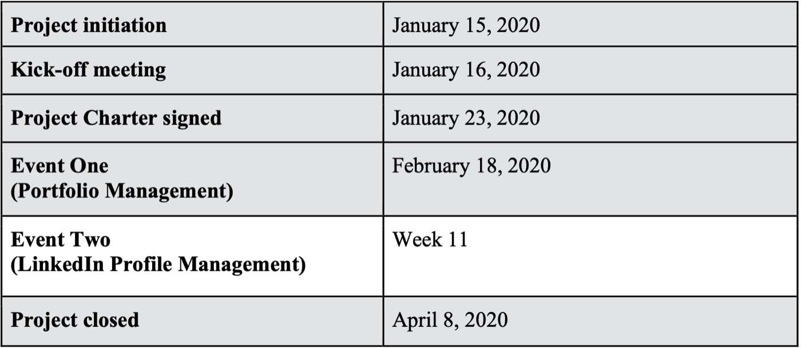

Course Project | Applied Project Closing Report
Keys to Me
See project documentsOverview
Keys to Me was a student-focused workshop initiative created through Enactus Fleming to help students build practical academic and professional development skills.
The project focused on planning and organizing workshops around:
- Resume and Portfolio development
- LinkedIn profile management
- career readiness
- student engagement
The initiative required coordinating event planning, stakeholder communication, promotions, registration management, and workshop execution within a fixed academic semester timeline.
Although the project scope was impacted by COVID-19 disruptions, the initiative became a strong exercise in event coordination, stakeholder management, risk response, and adaptive project execution.
The Challenge
The project aimed to successfully organize and deliver multiple student workshops within a single academic semester while balancing:
- limited timelines
- student availability
- promotional coordination
- stakeholder approvals
- event logistics
- participation targets
The team also needed to:
- increase workshop visibility and attendance
- coordinate with speakers and faculty
- manage event operations with limited resources
- adapt to unexpected disruptions caused by COVID-19
As the semester progressed, the project shifted from event execution into rapid risk management and contingency planning.
My Role
As one of the Project Managers on the Keys to Me initiative, I supported event coordination, communication management, registration workflows, and operational execution.
Key Responsibilities
- Assisted with project planning and workshop coordination
- Managed Eventbrite registration workflows
- Coordinated reminder communications to students
- Participated in in-class and social media promotions
- Supported stakeholder communication and approvals
- Contributed to scheduling and operational planning
- Helped manage workshop execution and attendee engagement
Project Approach
01 Workshop Planning & Coordination
The project was designed around a series of professional development workshops intended to improve student readiness and career-building skills.
The initial scope included:
- Portfolio Management workshop
- LinkedIn Profile Management workshop
- student promotions
- speaker coordination
- registration management
- feedback collection and evaluation
The team established milestone schedules, defined responsibilities, and coordinated event logistics within a semester-based delivery timeline.
Project milestone table

02 Event Execution & Stakeholder Coordination
The first workshop was successfully delivered through coordinated planning, promotions, and task management.
Key operational activities included:
- workshop promotions
- room booking coordination
- attendee registration management
- reminder communications
- event-day logistics
- evaluation form management
The project also required coordinating approvals and communications with:
- project sponsors
- professors
- student coordinators
- workshop speakers
- participating students
Lessons from the first event were immediately incorporated into planning for future workshops.
03 Adaptive Planning & Risk Management
The project encountered major disruptions due to COVID-19, resulting in event cancellations across the semester.
Rather than immediately closing the project, the team evaluated contingency options including:
- virtual workshops through Microsoft Teams
- pre-recorded workshop delivery
- alternate engagement formats for students
The team ultimately decided to close the project after assessing:
- platform adoption challenges
- timing constraints
- reduced participation risks
- exam-period conflicts
- stakeholder availability
This phase strengthened the project’s focus on:
- risk response
- stakeholder alignment
- realistic delivery assessment
- adaptive planning under uncertainty
04 Continuous Improvement & Lessons Learned
Throughout execution, the project team documented operational lessons and process improvements across:
- schedule management
- communication planning
- stakeholder coordination
- resource management
- risk planning
- event promotions
Several improvements were identified, including:
- earlier promotional planning
- clearer ownership distribution
- improved venue accessibility
- better contingency preparation
- stronger stakeholder alignment cadence
The project emphasized iterative improvement and learning rather than purely execution metrics.
Outcomes
- Successfully planned and delivered a student professional development workshop
- Coordinated cross-functional event logistics and communications
- Managed student engagement and workshop promotion workflows
- Adapted project planning during COVID-19 disruptions
- Developed contingency strategies for virtual event delivery
- Strengthened operational and stakeholder coordination processes through lessons learned
What This Project Strengthened
This project strengthened my ability to:
- Coordinate operational workflows across multiple stakeholders
- Manage event planning within fixed timelines
- Adapt delivery plans under rapidly changing conditions
- Improve communication and promotion strategies
- Balance execution with contingency planning
- Translate project lessons into actionable process improvements
Core Skills Demonstrated
Project Coordination · Event Planning · Stakeholder Communication · Risk Management · Schedule Management · Student Engagement · Operational Planning · Process Improvement · Workshop Management · Team Collaboration · Adaptive Planning